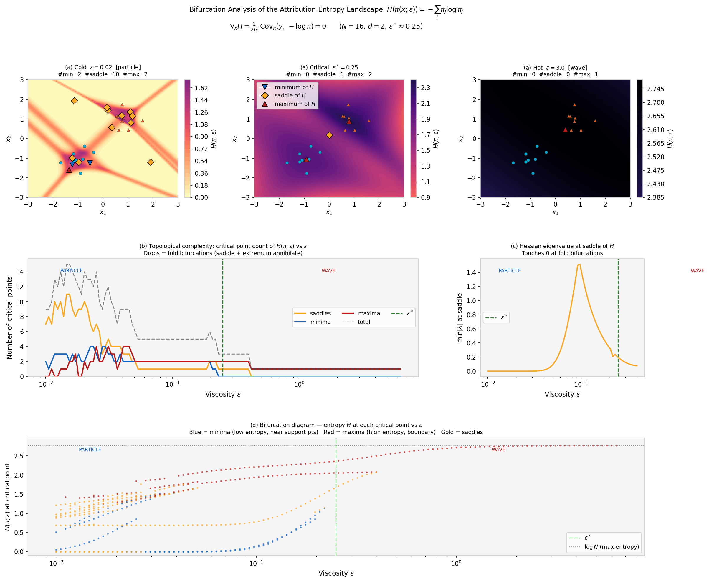

A trained neural network is, exactly, a Hamilton–Jacobi PDE — and training is a
search for its initial data. One deformation parameter ε unifies network, tropical
algebra, viscous PDE, and convex optimization in a single commutative diagram.
Training a neural network is identified, exactly, as a search through Hamilton–Jacobi
initial-value problems: each gradient step selects the initial data of a viscous
Hamilton–Jacobi equation whose Hopf–Cole propagator best fits the observations; at
inference, the input is the spatial point at which that solution is evaluated and the initial
condition is already encoded in the weights. The correspondence is exact for log-sum-exp layers
and structural for broader architectures: residual networks, transformers, and recurrent
architectures (RNNs, LSTMs, SSMs) each discretize the same class of Hamilton–Jacobi
equations, with architecture-dependent Hamiltonian and viscosity. A single deformation parameter
ε unifies all four perspectives (network, tropical algebra, viscous PDE, convex
optimization) in a commutative diagram closed under Lipschitz conditions. Quantitative
consequences include the minimax-optimal generalization rate
O(n−1/(d+2)) for fixed t, adversarial robustness
controlled by ε, backpropagation as the co-state equation of the Hamiltonian
system for residual networks, scaling exponents consistent with data intrinsic dimension via PDE
quadrature, and a closed-form O(N) influence function whose entropy landscape
undergoes fold bifurcations as ε increases.
Conventionally the question runs one way: given a PDE, design a network to approximate its
solution. Here a trained network already is a Hamilton–Jacobi equation, and the
question is which one.
The key is a single deformation parameter ε and ultradiscretization
— the exact passage ε → 0 between two algebraic worlds. At
ε = 0, addition is max and multiplication is + (the tropical semiring); at
ε > 0, ordinary arithmetic is restored and the same objects reappear as the
solution operator of a viscous PDE. The passage is not an approximation — it is an exact
semiring homomorphism, the Maslov dequantization.
The object realizing this is a log-sum-exp layer,
fε(x) = ε log ∑j exp((Wj·x + bj)/ε).
The Hopf–Cole linearization identifies it exactly as the heat-equation propagator of a
viscous Hamilton–Jacobi equation: the weights encode the initial data, the architecture
encodes the Hamiltonian, and a forward pass evaluates that PDE solution at the query point.
The Feynman–Kac formula is the unifying object: each neuron is a discrete path weighted by
a Boltzmann factor, and the forward pass computes the log-partition function of the ensemble.
Interactive: The Deformation Parameter ε
The log-sum-exp layer is a smooth deformation of the tropical max. Drag ε to see
LSEε(a, 0) relax toward max(a, 0)
(left) and its gradient become the Gibbs / softmax weight
σ(a/ε) (right). As ε → 0 the smooth layer
hardens into the Hopf–Lax lookup; as ε grows it becomes the viscous heat
propagator.
Layer output — LSEε(a, 0) vs max(a, 0)
ε = 1.00
▮ LSE (viscous, ε>0)
⎯⎯ Hopf–Lax max (ε→0)
Gradient — ∂/∂a LSEε = σ(a/ε) (Gibbs weight)
same ε as left
The gradient is exactly the softmax / Boltzmann–Gibbs weight — a genuine probability for all ε > 0.
The same ε is simultaneously the softmax temperature, the PDE viscosity, and the
convex-regularization strength. These roles are identified, not merely analogous.
Interactive: Particle ↔ Wave Phase Transition
The attribution weights πj(x;ε) ∝ exp((Wj·x + bj)/ε)
form a closed-form influence function. As ε sweeps, the Gibbs measure transitions
from a concentrated particle regime (Hopf–Lax, ε → 0)
to a spread-out wave regime (heat equation, ε → ∞).
Drag ε and watch the weights and their entropy H(π) change. The
critical scale is ε* = N−1/d.
Attribution weights πj over neurons
ε = 0.50
Low ε → one neuron dominates (particle). High ε → uniform spread (wave).
Attribution entropy H(π) vs ε
marker tracks slider
Entropy rises monotonically with ε; fold bifurcations merge attribution basins along the way.
This is the same particle-to-wave transition shown empirically below on synthetic and MNIST data
— the entropy landscape H(π) reorganizes through fold bifurcations as the
viscosity ε increases.
Dynamic Results: The Phase Transition in Action
Animations of the LSE network as a Hopf–Cole solution as the viscosity ε
sweeps across the critical scale ε* = N−1/d.
Synthetic (two-cluster). Attribution basins sharpen in the particle regime and flatten to uniform entropy in the wave regime.
MNIST (3 vs. 7). The decision boundary follows inter-cluster geometry in PCA space; ε* ≈ 0.091.
Bifurcation cascade. Critical points of the entropy landscape H(π) annihilate in fold bifurcations as ε increases.

Bifurcation diagram.H-value of each critical point vs. ε; branch annihilations are the fold bifurcations of the attribution theorem.
Quantitative Consequences
Generalization rate. ℓ∞ error vs. width N for
Lipschitz initial data across d ∈ {1,2,4}; dashed
O(N−1/d) slopes confirm the minimax rate.
Scaling law. Test RMSE vs. width for Adam-trained LSE networks; the empirical
exponent recovers the data intrinsic dimension via PDE quadrature.
Certified robustness (MNIST). Measured spectral norm
‖∇2xf‖2 vs. the theoretical bound
‖W‖22,∞/ε; the bound is never violated.
Certified robustness (CIFAR-10). Same bound across
ε ∈ {0.1, 0.3, 1.0, 3.0, 10.0}; raising ε monotonically reduces
input sensitivity.
The conversion deff = 1/α is directional and should be read as an order-of-magnitude
estimate; variation across domains is consistent with the manifold hypothesis.
Citation
@inproceedings{minoza2026hjdl,
title = {The Hamilton--Jacobi Theory of Deep Learning},
author = {Mi{\~n}oza, Jose Marie Antonio},
booktitle = {Advances in Neural Information Processing Systems},
year = {2026},
}